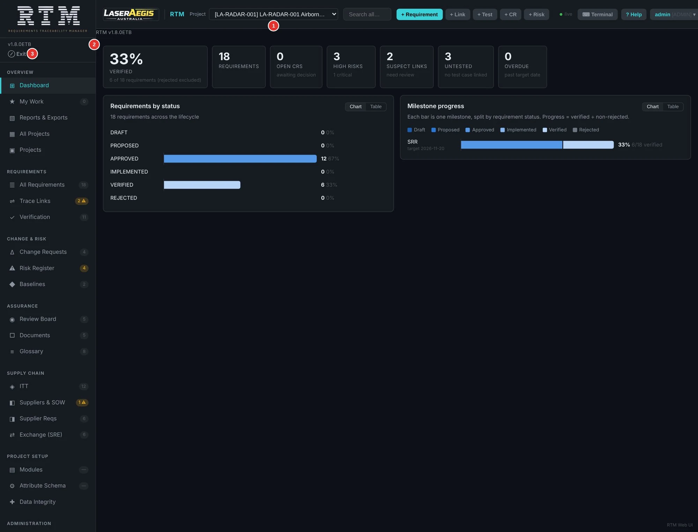
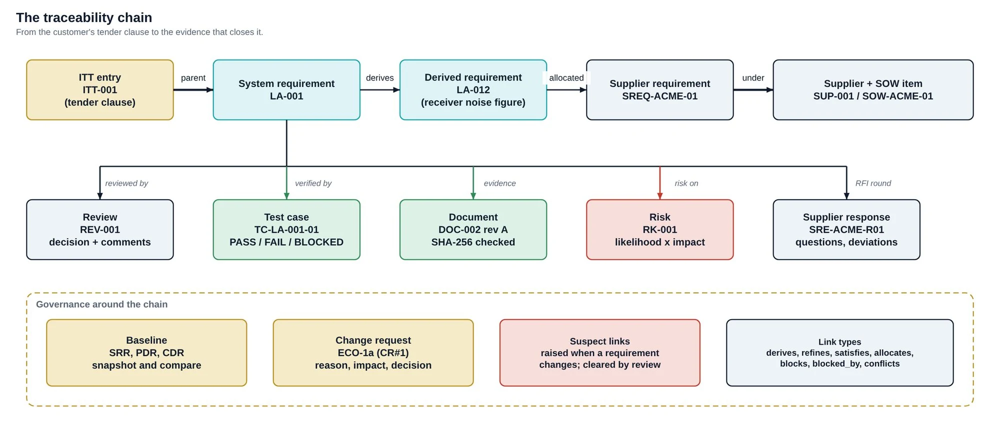
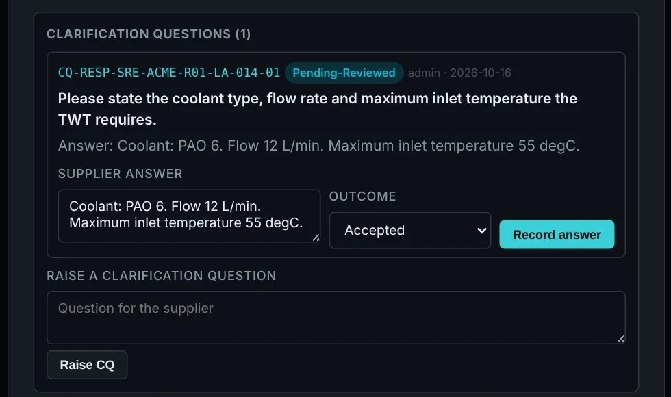
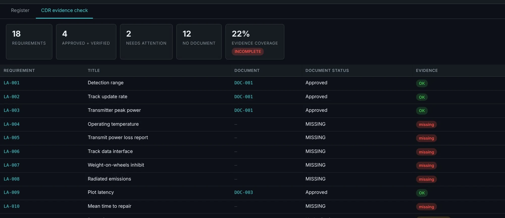
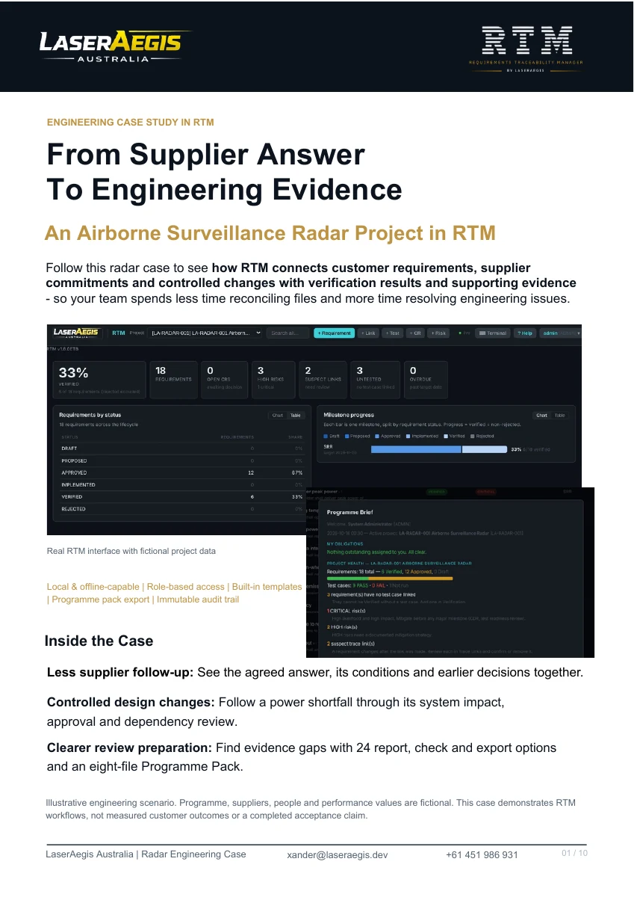

Supplier replies are scattered across emails and spreadsheets.
Supplier response tracking
Keep reply rounds, clarifications and exception decisions linked to each requirement.
LaserAegis Requirements Traceability Manager
Every requirement traceable, from tender to verification
Built for hardware engineering teams, LaserAegis RTM connects requirements, supplier responses, changes and verification evidence in one connected project record. Run locally or offline, with no complex deployment. Get started in minutes, not weeks.
Explore a guided workflow or the free case pack. No RTM installation needed for the case.
A connected view of your engineering project

Inspect full screen ↗RTM was developed through LaserAegis Australia’s own defence RF and laser projects, where requirements had to be decomposed, controlled and verified. It connects the engineering decisions with the records needed for review and delivery.
LaserAegis defence RF and laser engineering projects using RTM.
ITT decomposition, supplier compliance responses and requirements traceability.
Inspect requirement coverage, verification records and supporting evidence.
Built-in reports, checks and exports, including an eight-file Programme Pack.
What RTM solves
Supplier replies are scattered across emails and spreadsheets.
Keep reply rounds, clarifications and exception decisions linked to each requirement.
Changes lose their impact and approval history.
Compare baselines, retain approvals and flag affected trace links for review.
Test results and supporting documents are difficult to reconcile.
See test coverage, missing documents and changed evidence files.
A new tool means infrastructure work and blank project fields.
Run in your controlled environment with built-in attribute templates. No separate central or licence server.
Review packs take time to assemble from disconnected files.
Use built-in reports and export eight connected files in one Programme Pack.
Who changed a record, when, and why?
Keep changes accountable with role-based permissions and a recorded history of who did what and when.
How RTM works

Inspect diagram ↗Who RTM is for
Teams managing customer clauses, supplier commitments and engineering deliverables.
Engineers connecting component and subsystem requirements with interfaces, changes and tests.
Teams responsible for requirement coverage, test records and review evidence.
Practitioners organising requirements and handover records across agreed project scopes.
Where RTM makes the difference
Retain each response round, clarification and deviation or waiver decision. Suppliers can return CSV replies without running RTM.
Follow the supplier workflow →
Inspect full screen ↗Review missing or unapproved supporting documents, alongside separate test records. Registered-file checks help identify changed evidence that needs review.
Inspect verification and evidence →
Inspect full screen ↗Free engineering case

A supplier misses a timing limit. A power change affects system performance. An evidence check finds work still to do.
Explore a 10-page radar case showing how RTM helps reduce supplier follow-up, keep change impacts visible and find evidence gaps before review. Includes a practical review checklist and Excel / CSV requirements references.
Email required. RTM updates are optional. Fictional engineering scenario; no installation needed.
Deployment & fit
Each computer runs RTM with a local browser interface. Use a local or documented shared data folder. Roles, review records and audit history support team work.
Explore local deployment →Annual and three-year device licences, with team pricing. Start with a guided demonstration; we can then discuss hands-on access or a pilot tailored to your project.
Licensing and tailored pilot plans →Yes. Suppliers can complete and return the exchange CSV files without running RTM. Your team imports the replies and retains the response rounds, clarifications and decisions in the project record.
Bring existing requirements through CSV or ReqIF exchange. We can help check a representative file and its mappings. Check the exchange scope with a representative file.
RTM focuses on requirements, supplier responses, changes and verification records. It supports engineering judgement and review preparation; the applicable contract and customer still define acceptance.
See it with your team
We will demonstrate the relevant workflow and discuss your requirements, data exchange and deployment. You can decide whether a hands-on evaluation is useful.